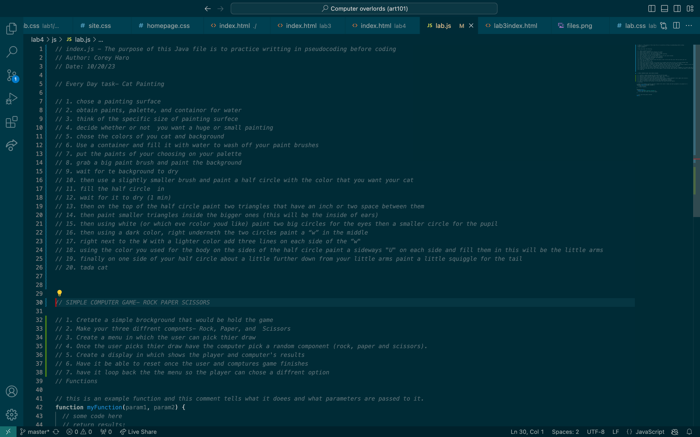

Lab 4 - 4-Pseudocoding and Problem-solving
Challenge
The challange of this lab was to use the pseudocoding technique and thinking to prepare us to use javascript.
Problems
There where honestly no problems I faced, this lab was relatively easy just a little cumbersome.
Reflection
This lab went quite well, I there was not alot of effor that was required of us it just asked for orginization.
Results
// Every Day task- Cat Painting
// 1. chose a painting surface
// 2. obtain paints, palette, and containor for water
// 3. think of the specific size of painting surfece
// 4. decide whether or not you want a huge or small painting
// 5. chose the colors of you cat and background
// 6. Use a container and fill it with water to wash off your paint brushes
// 7. put the paints of your choosing on your palette
// 8. grab a big paint brush and paint the background
// 9. wait for te background to dry
// 10. then use a slightly smaller brush and paint a half circle with the color that you want your cat
// 11. fill the half circle in
// 12. wait for it to dry (1 min)
// 13. then on the top of the half circle paint two triangles that have an inch or two space between them
// 14. then paint smaller triangles inside the bigger ones (this will be the inside of ears)
// 15. then using white (or which eve rcolor youd like) paint two big circles for the eyes
then a smaller circle for the pupil
// 16. then using a dark color, right underneth the two circles paint a “w” in the middle
// 17. right next to the W with a lighter color add three lines on each side of the “w"
// 18. using the color you used for the body on the sides of the half circle paint a sideways
"U" on each side and fill them in this will be the little arms
// 19. finally on one side of your half circle about a little further down from your little
arms paint a little squiggle for the tail
// 20. tada cat
// SIMPLE COMPUTER GAME- ROCK PAPER SCISSORS
// 1. Cretate a simple brockground that would be hold the game
// 2. Make your three diffrent compnets- Rock, Paper, and Scissors
// 3. Create a menu in which the user can pick thier draw
// 4. Once the user picks thier draw have the computer pick a random component (rock, paper and scissors).
// 5. Create a display in which shows the player and computer's results
// 6. Have it be able to reset once the user and comptures game finishes
// 7. have it loop back the the menu so the player can chose chose a diffrent option

Homepage